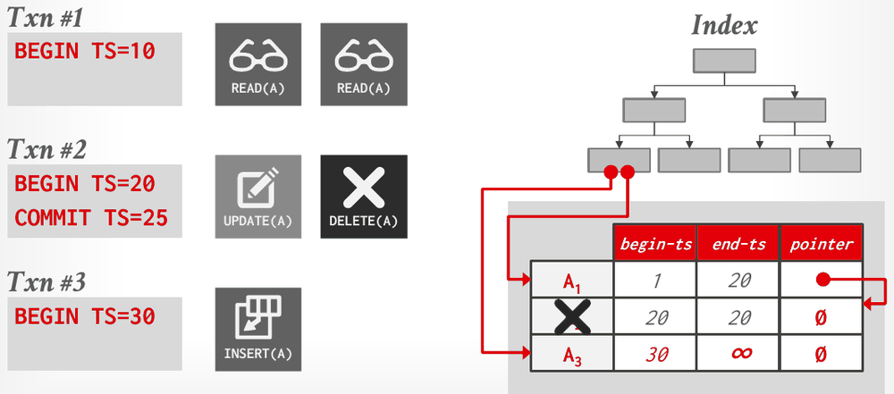

Database Internals in Go · Unit 8 · Lesson 7
P4.7 Primary-Key Index
Keep primary keys unique when several transactions insert the same key at once, read old versions through the index, reuse a deleted key's slot instead of adding a second entry, and make every tuple-and-link write check that nobody got there first.
So far every MVCC test has read tables through the sequential scan, and no table had a primary key that mattered. Task 4 of the writeup adds one. A primary-key index has to do two jobs at once: refuse a second live row with the same key, even when two transactions insert it at the same moment, and still lead an old snapshot to the version it is allowed to see. This lesson has two checkpoints. Stage 8 is uniqueness on insert (writeup 4.1). Stage 9 is the MVCC index scan, inserts into deleted slots, and the atomic check functions that the concurrent tests need (writeup 4.2).
Unit 4, Lesson 3: what does your B+tree's Insert(key, value) do when the key is already in the tree?
Unit 6, Lesson 4: which of these WHERE clauses does your SeqScanAsIndexScan rule turn into an IndexScan, given a single-column index on v1?
Unit 7, Lesson 6: Lecture #20's duplicate key problem ends with a list of what an MVCC index needs. What extra execution logic does it ask for in primary-key and unique indexes?
Uniqueness without locks
BusTub creates a primary-key index for CREATE TABLE t1(v1 int PRIMARY KEY) or PRIMARY KEY(v1, v2), with is_primary_key set (in Go, IndexInfo.IsPrimaryKey). A table has at most one. The writeup also says "the test cases will not create secondary indexes", so this task is about that one index.
Project 4 never locks a row, so the insert executor can't hold the key while it works. The writeup's recipe is three steps:
- Check whether the key is already in the index. If it is, the insert violates uniqueness: taint the transaction.
- Create the tuple in the table heap, with the transaction's temporary timestamp, as stage 4 does.
- Insert the key into the index. The index "should return false if the unique key constraint is violated", and your Project 2 tree does.
Step 3 is the conditional insert of Lecture #20: the B+tree checks and inserts under one leaf write latch, so of two transactions that both passed step 1 for the same key, exactly one gets true. The other one taints itself. In the writeup's words, "there will be a tuple in the table heap that is not referenced by any entry in the index." That orphan has the loser's temporary timestamp, so no other transaction can see it, and since you added it to the write set in step 2, the loser's abort turns it into a deletion marker with timestamp 0 (Lesson 6's rule for a fresh insert).
Step 1 is still worth doing although step 3 alone would be correct. The writeup's walk-through of txn9 inserting A, B and C shows the three outcomes: A is already in the index, so txn9 aborts before writing anything; B goes into the heap and then the index; C passes step 1, but txn10 inserts C in between, and txn9's index insert fails. The probe keeps the first case from leaving a tuple behind, and the tests count heap entries: TestTxnPKInsertUnique expects the table heap to hold at most one tuple after txn1's failed second insert of key 1.
"Taint" means what it meant for write-write conflicts in stage 5: call txn.SetTainted() and return common.NewExecutionException(...). The execution engine turns that error into (false, nil), ExecuteSQLTxn reports the statement as failed, and the test aborts the transaction later. The writeup notes that a tainted transaction may leave tuples in the heap, and that another transaction writing there "should still be regarded as a conflict".
The writeup gives Task 4.1 a short scope note: you don't need the MVCC index scan yet. BusTub's tests at this stage read with plain SELECT * FROM maintable, so the sequential scan does all the reading, and stage 8 changes only execution/insert_executor.go.
Index entries never go away
Task 4.2 fixes the rule for every later stage: "Once an entry is created in the index, it will always point to the same RID and will NOT be removed even if a tuple is marked deleted. We do this so that an earlier transaction can still access the history with the index scan executor." Your stage-5 delete already keeps primary-key entries. Two consequences follow, and stage 9 implements both.
First, an index hit no longer means "the key exists". The RID may hold a deletion marker. The writeup's example: tuple (B, 2) was deleted by a transaction with commit timestamp 3, and txn9 now inserts (B, 3). The index still maps B to that RID, so txn9 must not create a new tuple, which would need a second entry for B. It updates the deletion marker into the new tuple, "as if it were an update": the slot gets txn9's temporary timestamp, and an undo log records that before txn9 the tuple was deleted. GenerateNewUndoLog already documents this case: with a nil base tuple, it is the "insert into a deleted slot: the log has IsDeleted set and no columns."
Second, every key keeps its RID, and a RID never changes its key (stage 10 makes sure of that for key updates). So when the index scan finds the RID for key k, the version chain at that RID is the complete history of key k. Reconstruct the version your snapshot sees, check the filter on it, and you have the right answer, also for a transaction that began before the key was deleted.
Lecture #20 shows the general problem this avoids. There, a deleted key and a reinserted key are two logical tuples with two index entries. BusTub keeps one entry and one version chain per key forever, so a lookup never has to choose among several entries.

#20 Multi-Version Concurrency Control, "Index conflicts" (1:15:54), slides 29–30: the duplicate key trace and what it demands from primary-key and unique indexes.
In the shell, on a finished stage 9, the reuse is visible with \dbgmvcc (the output format is your own TxnMgrDbg; this is the reference's). Key 1 is inserted, deleted and inserted again, each statement in its own auto-commit transaction:
bustub> CREATE TABLE t(a int primary key, b int);
bustub> INSERT INTO t VALUES (1, 10), (2, 20);
bustub> DELETE FROM t WHERE a = 1;
bustub> INSERT INTO t VALUES (1, 11);
bustub> \dbgmvcc t
debug_hook: \dbgmvcc
RID=9/0 ts=6 tuple=(1, 11)
txn5@0 <del> ts=5
txn4@0 (1, 10) ts=4
RID=9/1 ts=4 tuple=(2, 20)The table still has two slots. RID 9/0 is key 1's slot for good: its base is the reinserted (1, 11), committed at 6, and its chain says "deleted at 5" (the reinsert's log) and "(1, 10) at 4" (the delete's log). A second insert of key 2, a live row, fails:
bustub> INSERT INTO t VALUES (2, 99);
+-------------------------------+
| __bustub_internal.insert_rows |
+-------------------------------+
txn not in running stateThe auto-commit transaction was tainted by the duplicate, so its commit fails with "txn not in running state", which is how ExecuteSQL reports a failed statement outside an explicit transaction.
The MVCC index scan
Your Project 3 index scan collects RIDs from the tree (point lookups or an ordered scan), fetches each tuple, skips deleted ones and applies the filter. With version chains, "skip deleted ones" is wrong in both directions: a deletion marker may hide a version the snapshot should see, and a live base tuple may be too new for it. The fix is the path your stage-3 sequential scan already follows for each RID: read meta, tuple and link together with concurrency.GetTupleAndUndoLink, collect the undo logs with concurrency.CollectUndoLogs, reconstruct with concurrency.ReconstructTuple, and only then evaluate the filter, on the reconstructed tuple.
The tests that need it call ensureIndexScan first. It creates a table pk_test_table_n, sets force_optimizer_starter_rule=yes, and checks that EXPLAIN SELECT * FROM pk_test_table_n WHERE pk = 1 contains an IndexScan. If it doesn't, the test fails with "index scan not found in plan" and a hint naming optimizer/seqscan_as_indexscan.go and the Project 2 tree. So a stage 9 failure before any MVCC code runs points at your Project 3 rule or your Project 2 tree. The writeup says the same: "a working implementation of the optimizer rule that transforms a sequential scan into an index scan is required for Task 4.2." queryIndex then runs SELECT * FROM maintable WHERE col1 = k for each key, which your rule plans as an index scan, and expects one row or none.
Racing writers need a check
Stage 5's delete and update read the tuple, decide, and then write tuple and link. With one goroutine that is fine. With eight it isn't: two transactions can read the same committed base, both pass the write-write conflict check (the base timestamp is at or below both read timestamps), and both write. The second write replaces the first, and the first transaction's change is lost, although that transaction goes on to commit. The writeup: "if multiple transactions are updating the UndoLink at the same time. You should correctly abort some of them and let exactly one of them proceed without losing any data. Starting from this task, you will need to use the atomic helper function UpdateTupleAndUndoLink/GetTupleAndUndoLink and pass in the check function to avoid race conditions."
The pre-built concurrency.UpdateTupleAndUndoLink(m, rid, undoLink, heap, txn, meta, t, check) takes the table page's write latch, reads the current meta and tuple, calls check with them, and writes the new tuple and link only if it returns true; otherwise it returns false and changes nothing. Inside the check, nobody else can change that tuple, because every writer of a tuple goes through the same page latch. So a check that compares what is there now with what you read before deciding turns "read, decide, write" into one atomic step. A false result means somebody else wrote first, which is a write-write conflict: taint and fail.
Two details of the check are easy to get wrong. The *UndoLink the check receives is the link you are about to write (BusTub passes its undo_link argument through), not the current one; read the current link yourself with txnMgr.GetUndoLink(rid), which takes only the version-info latch and is safe under the page latch. And mind when the undo log comes into existence. A reader that sees your new link follows it into your transaction's undo log buffer, so the log must exist by the time the link is visible. Appending it before the write is the simple order, and it leaves a stray log behind if the check then fails (harmless: the transaction is tainted and will be aborted). Appending it inside the check is tidier: you know its index in advance, since only your transaction appends to its own buffer.
The same check protects an insert into a deleted slot: between your probe and your write, another transaction may have reinserted the key. And it is why the concurrent tests of this stage exist. TestTxnIndexConcurrentUpdate has 8 goroutines add 1 << thread to each of 20 rows, one transaction per row; the final value of a row must be the sum of the committed increments, which is what a lost update breaks. Odd trials also read, delete and reinsert the row inside the transaction. TestTxnIndexConcurrentUpdateAbort runs 100 two-row transactions per goroutine and aborts those that conflict.
BusTub's check is a std::function, usually a lambda that captures by reference. In Go it is a closure: check := func(cur table.TupleMeta, _ table.Tuple, _ common.RID, _ *concurrency.UndoLink) bool { ... } sees the local variables of the function that builds it, such as the meta and link you read earlier, and anything it assigns to them is visible after UpdateTupleAndUndoLink returns. Keep the closure short: it runs under a page write latch. Don't call GetTupleAndUndoLink in it (it takes the same page's read latch, and Go's RWMutex is not reentrant).
What stays as in Project 3
- Secondary indexes keep Project 3's upkeep: insert adds the key, delete removes it, an update that changes the key removes the old entry and adds the new one. Only the primary-key index follows the never-remove rule. This is the course's design (BusTub's P4 tests create no secondary index, so BusTub doesn't say), and it keeps
p3.05-index-scan-btree.sltand the Project 3 index tests passing. The price: a secondary index is not snapshot-safe, so an old snapshot reading through one can miss a row whose key changed after it began. - The nested index join is not MVCC-aware: it fetches the inner tuple as Project 3 does, without the version chain. BusTub's Project 4 writeup doesn't ask for it either. No Project 4 test uses it. If you want to fix it, the visibility path above is all it needs.
Check your understanding
Stage 8. txn9 inserts key C. Its probe finds no entry, it inserts the tuple into the heap, and then InsertEntry returns false because txn10 inserted C in between. What is left behind?
The index maps key B to a RID whose base is a deletion marker committed at timestamp 3. A transaction with read timestamp 2 inserts B. What does a correct stage 9 do?
From the \dbgmvcc dump above: RID=9/0 ts=6 tuple=(1, 11), then txn5@0 <del> ts=5, then txn4@0 (1, 10) ts=4. A transaction with read timestamp 5 runs SELECT * FROM t WHERE a = 1 through the index. What does it get?
T1 and T2 both read row r, whose base was committed at 4, below both read timestamps. T1's UpdateTupleAndUndoLink succeeds first. What should T2's check function do, and what happens without one?
Build it: primary-key uniqueness (stage P4.7a)
You edit execution/insert_executor.go. Run commands from go_db_internals/intro_to_db. The rules, in plain words:
- Find the table's primary-key index among its indexes (
IsPrimaryKey), and build the key from the child tuple as Project 3 did. - If the index already has the key, taint the transaction and return an execution exception before writing anything.
- Otherwise insert the tuple with your temporary timestamp, add it to the write set, then insert the key. If
InsertEntryreturns false, another transaction won: taint and fail, and leave the tuple where it is. - Secondary indexes, if a table had any, get their entries as in Project 3.
-
What to think about
Which index is the primary key, and how do you build its key from a full table tuple for a composite key such as
PRIMARY KEY(v1, v2)? AnINSERTwith two rows for key 5: when the second row is probed, what does the index already hold?The approach
Move the per-tuple work into a helper that inserts one tuple and returns an error; stage 10's update will call it too. In it, look for the index with
IsPrimaryKey, build the key withKeyFromTuple(schema, idx.KeySchema, idx.Index.KeyAttrs()), and askScanKeyfor it. Any hit is a violation at this stage. Return the error up throughNextunchanged, so the engine sees an execution exception.One key fragment
if len(pk.Index.ScanKey(key)) > 0 { txn.SetTainted() return common.NewExecutionException("duplicate primary key") } -
What to think about
Your Project 3 insert ignores
InsertEntry's result. Under concurrency, what does a false result mean here, after your probe found nothing? What happens to the heap tuple you just wrote when this transaction aborts, and what makes the abort find it?The approach
Keep stage 4's insert (temporary timestamp, no undo link,
AppendWriteSet) and only then callInsertEntryon the primary-key index. On false, taint and return an execution exception; don't try to remove the tuple. Your abort already turns write-set tuples without an undo log into deletion markers with timestamp 0. Then add the other indexes' entries as before.One key fragment
txn.AppendWriteSet(e.tableInfo.OID, rid) // first: Abort must find the orphan if !pk.Index.InsertEntry(key, rid) { txn.SetTainted()
From go_db_internals/intro_to_db, run:
go test -race -run '^TestTxnPKInsert' -timeout 300s ./...It runs five tests: BusTub's TestTxnPKInsertUnique (IndexInsertTest) and TestTxnPKInsertConcurrent (IndexConcurrentInsertTest: 50 trials of 8 goroutines inserting keys 0 to 79, one transaction each, where exactly one insert of each key may commit), and the extras TestTxnPKInsertUncommittedConflict (a key inserted by a transaction that has not committed yet), TestTxnPKInsertComposite (PRIMARY KEY(v1, v2)) and TestTxnPKInsertSameStatement (VALUES (5, 0), (5, 1)). Success prints ok intro_to_db/txntest, in about 4 seconds on the reference; every other package prints ok with [no tests to run], or [no test files]. While you iterate, add -short after the regex for 10 trials instead of 50, and run without it before moving on.
With Project 3's insert, every uniqueness test fails with sql "INSERT INTO maintable VALUES (1, 1)" in txn1 should not execute successfully: there should be a write-write conflict, followed by the hint if you want to taint a txn, you should both SetTainted and return common.NewExecutionException. The concurrent test reports trial 1: multiple winner for inserting 0 (threads 0 and 1 both committed it). An insert that skips the probe and relies on InsertEntry alone fails on the heap count: verify table heap: error: expect table heap to contain at most 1 elements, found 2. A failing test also logs your TxnMgrDbg dump after each step; -v shows the steps for passing tests too.
If the concurrent test keeps finding no winner, or every winner is the same goroutine, look at your Project 2 tree before your executor: its unique Insert under concurrency is what decides the race. Then rerun Project 3's tests, since you changed one of its executors:
go test -race -count=1 ./...Every package must print ok except intro_to_db/txntest, which still fails the tests of stages 9 to 11; add -skip '^TestTxn' to hide them while you check Project 3.
Build it: index scan, deleted slots and atomic writes (stage P4.7b)
You edit execution/index_scan_executor.go, execution/insert_executor.go, execution/delete_executor.go and execution/update_executor.go. The rules:
- The index scan returns, for each RID it finds, the version the transaction can see, or nothing; the filter is checked on that version.
- Primary-key entries are never removed and never move. An insert whose key the index already has goes to that RID: a live tuple there is a unique violation; a deletion marker committed at or below the read timestamp, or deleted by this transaction itself, is reused like an update; a marker that is newer than the read timestamp, or another transaction's temporary timestamp, is a write-write conflict.
- Every write of a tuple and its undo link that follows a read goes through
UpdateTupleAndUndoLinkwith a check that the meta and the link are still what you read. A failed check is a write-write conflict.
-
What to think about
Where does your index scan read the tuple and test
IsDeletedtoday? For a key deleted after your snapshot began, what is in the heap, and where is the version you should return? Could the index scan and the sequential scan share one helper?The approach
Leave the RID collection (point lookups, ordered scans, repeated keys) as it is. Replace the tuple fetch with
GetTupleAndUndoLink, then do what your sequential scan does:CollectUndoLogsfor the context's transaction, and if it reports the tuple existed,ReconstructTuple(or the base itself when the list is empty). Skip the RID when either says there is no version. If your stage-3 scan has this in a helper in packageexecution, call it from both executors.One key fragment
meta, t, link, _ := concurrency.GetTupleAndUndoLink(txnMgr, heap, rid) logs, ok := concurrency.CollectUndoLogs(rid, meta, t, link, txn, txnMgr) if !ok { continue // the key did not exist at our read timestampCheckpoint: MVCC index scanRun
go test -race -run '^TestTxnIndex(InsertDelete|UpdateConflict)$' -timeout 300s ./.... These two need only the index scan. Success printsok intro_to_db/txntest. With Project 3's index scan,TestTxnIndexInsertDeletefails withERROR: expect col1 = 1 to have 1 row, found 0 rows (txn1_reverify, read ts 4): <empty table>: txn2 deleted every row and committed at 5, and the index scan skips the deletion markers instead of reconstructing the rows txn1_reverify still sees.TestTxnIndexUpdateConflictfails withsql "UPDATE maintable SET col2 = 2 WHERE col1 = 1" in txn3 should not execute successfully: there should be a write-write conflict: the update's index scan found no row 1, so there was nothing to conflict on. -
What to think about
List the states the RID can be in: a live tuple (committed or not), a deletion marker committed at or below your read timestamp, one committed later, one with another transaction's temporary timestamp, one with yours (you deleted the row earlier in this transaction), and a marker with timestamp 0 left by an abort. Which one is a unique violation, which ones are conflicts, and which can be written over? Does your transaction already have an undo log for this RID?
The approach
This is your delete and update code with a different target, so reuse it rather than writing a fourth copy: one function that writes a new tuple (or a deletion) at a RID for this transaction, with a flag that says "this is an insert, so the base must be a deletion marker". A live base under that flag is a violation (taint). Otherwise the usual rules apply: a conflict if the base timestamp is another transaction's temporary timestamp or above your read timestamp; your own log for the RID is extended with
GenerateUpdatedUndoLog; a first change getsGenerateNewUndoLog(schema, nil, &newTuple, baseTs, link), the IsDeleted log; a tuple you inserted yourself needs no log. The new meta is your temporary timestamp, not deleted. Add the RID to the write set. No new index entry: the primary key's entry already points here.One key fragment
if rids := pk.Index.ScanKey(key); len(rids) > 0 { return e.insertIntoSlot(rids[0], t) // update the marker in place }Checkpoint: the single-threaded testsRun
go test -race -run '^TestTxnIndex(InsertDelete|Update|Abort|OldSnapshot)' -timeout 300s ./.... It runs the nine single-threaded tests of the stage: the two above,TestTxnIndexUpdate,TestTxnIndexAbort, and the extras...InsertDeleteReinsert,...UpdateAbort,...UpdateConflictContinued,...AbortContinuedand...OldSnapshot. Success printsok intro_to_db/txntest. Without slot reuse, every reinsert of a deleted key fails, for example inTestTxnIndexAbort:failed to execute sql "INSERT INTO maintable VALUES (1, 2333), (2, 23333), (3, 233)" in txn2: the statement reported an execution exception (a write-write conflict?); txn is TAINTED. ItsTxnMgrDbgdump just before shows why the key is "taken":RID=2/0 ts=0 <del marker> tuple=(1, 233), the aborted insert. -
What to think about
Between your
GetTupleAndUndoLinkand your write, what can another goroutine change, and which of those changes would make your undo log wrong? When must your new undo log exist, given that a reader may follow the new link the moment the page latch is released? Which link does the check function receive as its argument?The approach
In the shared write function, keep the meta and link you read and the undo log you generated. Build a closure that compares the current meta (its first argument) with the meta you read, and the current link (
txnMgr.GetUndoLink(rid), withInvalidUndoLinkwhen there is none) with the link you read, and returns false on any difference. Either record your undo log in the closure, once it has approved (ModifyUndoLogfor your own,AppendUndoLogfor a new one, whose index isUndoLogNum()before the append), or append it before calling. Pass the closure toUpdateTupleAndUndoLink; on false, taint and return the conflict error.One key fragment
if cur != meta || curLink != link { return false // someone wrote this tuple after we read it }
From go_db_internals/intro_to_db, run:
go test -race -run '^TestTxnIndex' -timeout 300s ./...It runs eleven tests: BusTub's TestTxnIndexInsertDelete, TestTxnIndexUpdate, TestTxnIndexUpdateConflict (from GradingTxnIndexTest), TestTxnIndexAbort (AbortIndexTest, in BusTub's abort suite but needing Task 4.2), TestTxnIndexConcurrentUpdate and TestTxnIndexConcurrentUpdateAbort, and the five extras named above, which stand in for BusTub's "hidden tests" markers. Success prints ok intro_to_db/txntest, in about 6 seconds on the reference; the other packages print ok with [no tests to run] or [no test files]. Add -short after the regex while you work (10 trials instead of 50, 3 instead of 10).
A write without a working check passes every single-threaded test and fails the concurrent ones with a lost update:
--- FAIL: TestTxnIndexConcurrentUpdate (0.06s)
--- FAIL: TestTxnIndexConcurrentUpdate/trial_1 (0.06s)
txn_index_concurrent_test.go:127: trial 1: running with 8 threads with 20 rows, add_delete_insert=false
txn_index_concurrent_test.go:192: query var=query_txn id=165 status=RUNNING read_ts=125 sql="SELECT * FROM maintable": ERROR: result mismatch
--- EXPECTED ---
0, 201
1, 107
...
--- ACTUAL ---
0, 137
1, 107
...Row 0 lost 64, the increment of goroutine 6, which committed although its write was overwritten. On odd trials a missing self-reinsert shows up as trial 2: worker 0: cannot insert data (INSERT INTO maintable VALUES (0, 1), into the slot the transaction deleted): ok=false err=<nil>. A hang fails after the trial's deadline with a message naming the workers still running: look for a latch taken twice (a GetTupleAndUndoLink inside the check) or TxnMapMu held around GetUndoLog. If a failing test stops at ERROR: index scan not found in plan, the problem is your Project 3 SeqScanAsIndexScan rule or your Project 2 tree, not this stage.
Rerun this stage and the previous one a few times with -count=3, then Project 3's tests, since you changed four of its executors:
go test -race -count=1 ./...Every package must print ok except intro_to_db/txntest, which still fails the tests of stages 10 and 11. For a look at a failing case by hand, start the shell (go run ./cmd/shell), run the test's statements with BEGIN and \txn, and print the chains with \dbgmvcc maintable.
InsertEntry already refuses duplicates, why a RID can keep its key forever, which link the check function receives, or what an insert should do with a deletion marker that has another transaction's temporary timestamp. Ask your teacher (me) before moving on.
Primary sources: the CMU 15-445/645 Fall 2025 Project #4 writeup (Task #4: 4.1 Index Insert, 4.2 Index Scan, Delete, & Update; Project Specification); BusTub src/include/concurrency/transaction_manager.h and src/concurrency/transaction_manager_impl.cpp (UpdateTupleAndUndoLink, GetTupleAndUndoLink), src/execution/insert_executor.cpp, src/execution/index_scan_executor.cpp, test/txn/txn_index_test.cpp, test/txn/txn_index_concurrent_test.cpp and test/txn/txn_abort_serializable_test.cpp at commit d49b823; Lecture #20 slides 29–30; this course's concurrency/transaction_manager_impl.go, concurrency/execution_common.go, txntest/txn_index_test.go, txntest/txn_index_concurrent_test.go, txntest/txn_abort_test.go and txntest/txn_extra_test.go.